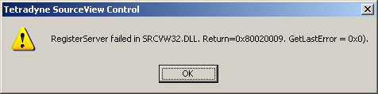
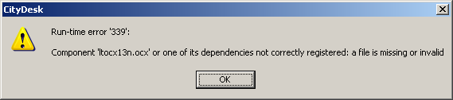

Fame at last
Article about Resolver on Slashdot's front page today. Lifetime ambition: Check!
fillup zillup
Article about Resolver on Slashdot's front page today. Lifetime ambition: Check!
fillup zillup

Had a marvellous time at PyCon UK 2007, a conference about the Python programming language. In the event everyone from Resolver bar one of our directors went along. We met loads of great and interesting folks, heard many excellent talks, and gave a few of our own: Michael talked about driving Microsoft's natty new Silverlight technology using IronPython. Giles talked about his concept of the New Age of the Amateur: End-user Computing without Tears, and I gave a little talk about test-driven development for beginners, which can be downloaded here:
My few photos are also online.

As reported on Groklaw - Complaint Filed by CCIA with FTC Re Fair Use, a conglomerate of computer, technology and communication companies are filing suit against major copyright holders such as movie studios, sports leagues and publishers, to prevent them from continuing the practice of misleading the public with their threatening copyright notices. The nitty-gritty of the filing is that notices such as
"WARNING: For private use only. Federal law provides severe civil and criminal penalties for the unauthorized reproduction, distribution or exhibition of copyrighted motion pictures and video formats."
at the start of movies serves to intimidate the public from attempting the many operations to which they are legally entitled, and even encouraged, by US Federal laws and equivalents globally.
Time to get on the bandwagon? Anyone else interested in conspicuously taking photos of the copyright notice on the opening day of some blockbuster movie, and when they come to eject us from the cinema, find that we're handcuffed to our front row seats?
So I'm helping a friend create a small website. Casting around for lightweight tools, I remember that an intelligent and influential blogger, much admired by me, has founded a software company which produces, amongst other things, City Desk, a web site creation tool.
Checking out their website, I am delighted to find there is a free-to-use version for small projects much like the one I am embarking on. I download it, install it, and fire it up eagerly. Just about the last thing I expected to see was this.
\

Just goes to show, creating software which just works is a tough problem. If the likes of Joel can't figure it out, what hope do the rest of us have...?
Update: It looks like the problems are due to my Windows user account being limited privs. I perform installs and the like with elevated privs, using the brilliant MakeMeAdmin.cmd. It looks like running CityDesk for the first time performs some install-related activities, such as setting up the Platform SDK, which require admin privs. Once this is done, subsequent runs can be done as a limited privs user with no problems.
Rufus comments on certain English educational establishments becoming hotbeds of Northern cultural celebration. I can't argue with the unintentional comedy of the idea, but at the same time, such moves seem to my mind to be causes for both celebration - long overdue acknowledgements of the richness of human experience that shaped countless generations across vast tracts of this land, and simultaneously a regrettable sign of protectionism, incited by the relentless erosion of the very culture they intend to promote.
The London Cockney may also be a thing of the past, but at least they have been preserved in the minds of the current generation, albeit as some kind of morbid parody. In contrast, the richness and warmth of traditional Northern lifestyles is right on the verge of slipping away silently, if it hasn't already entirely done so. A culture as different from the South as another country, in everything from their food to their industry. It may be a culture that is now almost entirely lost to the inexorable market forces of a wealthier and more powerful neighbour, but it is a culture that valued human traits which are sorely missed in this harsh world.
With dialects that as recently as my grandparents' generation were completely incomprehensible to the rest of the country, dialects that are as close to ancient tongues as any alive today. A rich and vital part of this country's history, political struggles, battles fought and lost, the veritable heartland of the industrial revolution that gave birth to the modern age - all lost, unappreciated, and almost unremarked, save for the odd enigmatic reference to whippets and flat caps.
Hey. I'm doing some Perl coding on the side. Who knows a good way to interleave two lists? For example, combining (1, 3 ,5) and (2, 4, 6) to produce ((1, 2), (3, 4), (5, 6)) ?
It's easy, Perl has a built-in zip operator:
`my @result = (1, 3 ,5) ¥ (2, 4, 6)`
Brilliant, thanks. Hang on. What the crap!? Is that really a Yen symbol in there? You have got to be shitting me. What. The. Crap.
Ha! Yeah, I know, its a little weird, but since Perl supports source code unicode encodings, we thought "why not?" Typographically, it looks like a little zipper, you see? Geddit?
Right. I see that now. Um. So which unicode Yen symbol do I use?
¥ U+00A5 YEN SIGN ￥ U+FFE5 FULLWIDTH YEN SIGN
They both look the same in my browser. In fact, they both just look like question-marks in many people's browsers.
Oh, you can easily tell the difference - one of them simply won't work. Just try them both out until you find the one that works!!!! :-)
Right. Brilliant. And who is responsible for this gem?
Oh, that was Larry. Look, if you don't like it, come to think of it, it's been renamed recently. The zip operator is now simply spelt 'Z'.
Yeah, whoever would have predicted that might happen? Guess who gets their language designer privileges revoked? Morons. Get away from me, before I get any stupid on me.
by Harold Pinter, 1958. Directed by Ian Rickson. At the National Theatre's Lyttelton theatre.
As I was forewarned is typical of Pinter, difficult to untangle a point, but nevertheless both chilling and amusing in turns. Having said that, I'd really have to go and read all about it before I could decide whether I actually liked it or not, which I guess means that currently I don't. 4/10
"It's gonna be OK."
That's the new "reimagined" version, Dad. I don't really do much television, and for 2006, downloads of Battlestar was pretty much the only exception. It's edgy and well-written, and it leaves me breathlessly excited, and yes it had that lull on New Caprica about five episodes in, but then it blossomed again, experimenting with one-off shows, cool ideas, and great characters that remain emotive and involving while staying well clear of Dawson's Creek. And what a series finale! Blowing the whole stack of Cylon sleeper agents all at once, the awful yawning realisation as they each heard the activation signal in the back of their minds, all drawn to converge on the same room, what a headfuck, with the psychedelic nebula backdrops all around, to the rising strains of All Along the Watchtower, as Apollo discovers Starbuck is still alive. Hooray! Loved it loved it loved it. 8/10.
by David Lynch (1999)
Aw, heck, I dunno. It's kinda down to Earth and charming, but also plain and slow-moving. And sure, that was deliberate, it wanted to tell a simple, powerful story in the terms of its protagonists, within the context of rural life. But I couldn't really get into it, despite really wanting to. Some of the acting was a bit lacking. IMDB informs me that it's a true story. Fair enough. It's still 4/10.